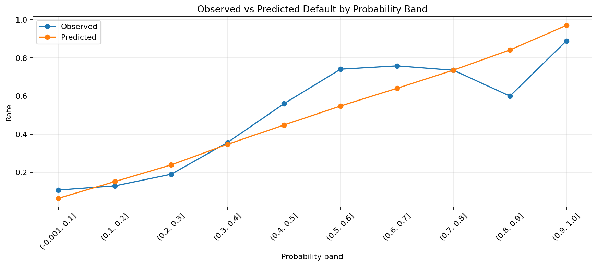
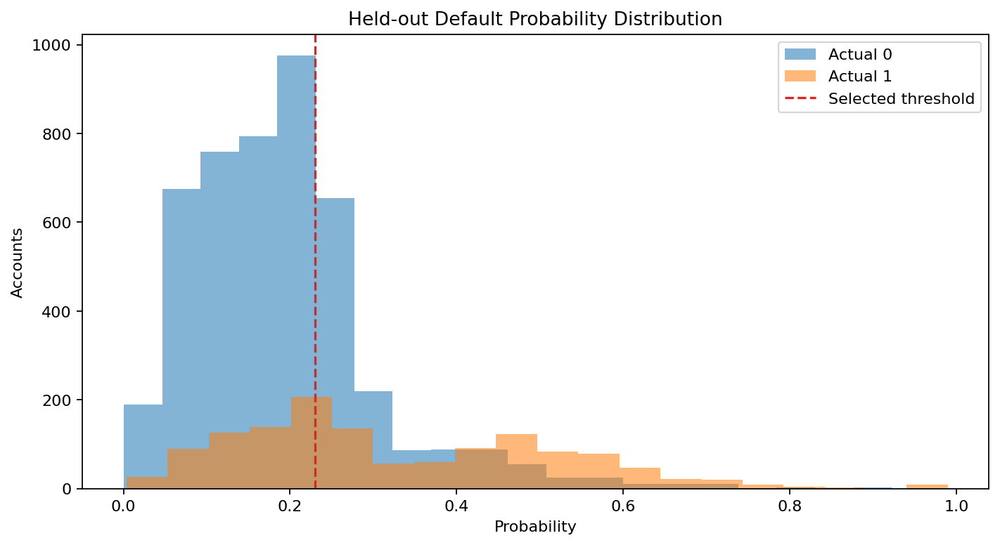
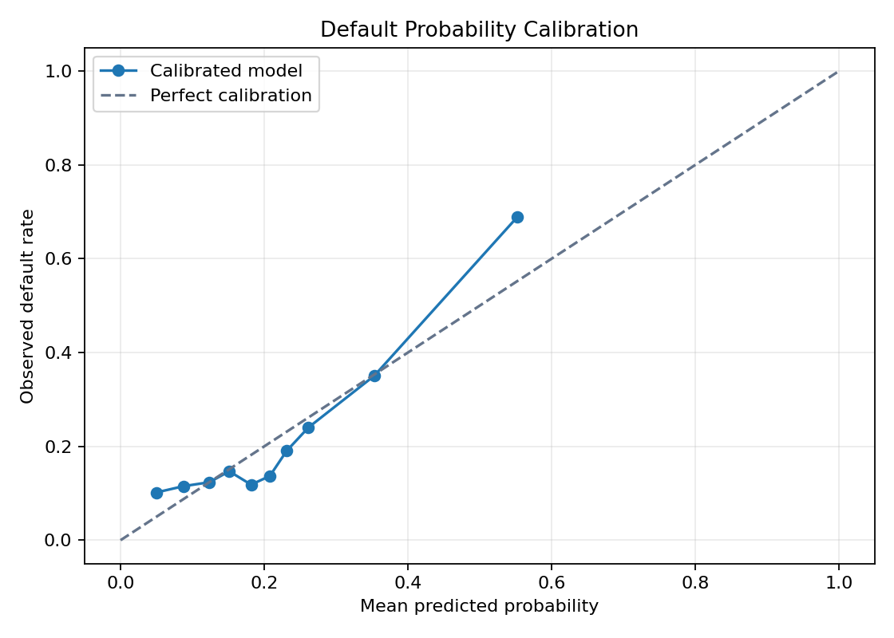
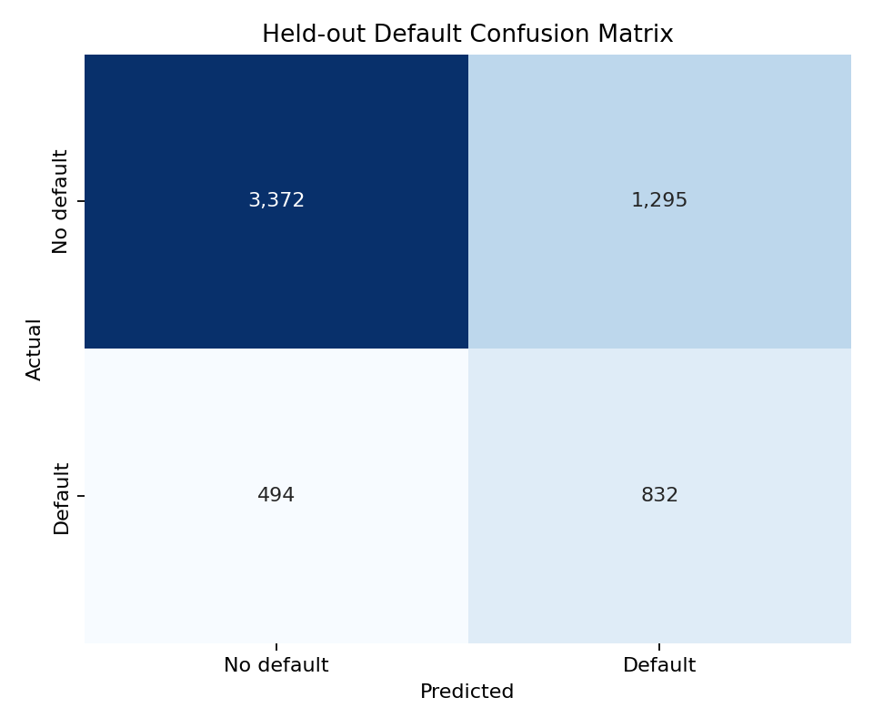

Calibrated Credit Default Risk
Author: Mohammed Adeen Shaik
Review date: 11 October 2026
Research question
How does a calibrated baseline trade off missed defaults against false alerts under an explicit cost assumption?
Data and provenance
UCI Default of Credit Card Clients dataset.
Source materials are linked from the repository README. Input fingerprints are recorded in the evidence manifest so a reader can identify the exact committed artifacts used in this review.
Method and analytical rationale
Training-only imputation and scaling precede class-weighted logistic regression. Five-fold sigmoid calibration estimates probability corrections. Validation data selects a threshold under an assumed 5:1 error-cost ratio; test data measures the locked decision.
Findings and interpretation
Fresh execution on 11 October 2026 using the committed pipeline and seed 42. Five-fold sigmoid calibration was fitted only on training partitions. On 5,993 held-out records, precision was 39.1%, recall 62.7% and average precision 0.5092. The test set contained 494 missed positives and 1295 false alerts. These are retrospective sample results.
| Measure | Value |
|---|---|
| average precision | 0.5092 |
| roc auc | 0.7263 |
| brier score | 0.1452 |
| precision | 0.3912 |
| recall | 0.6275 |
| f1 | 0.4819 |
| expected classification cost | 3765.0000 |
| true negatives | 3372 |
| false positives | 1295 |
| false negatives | 494 |
| true positives | 832 |
| decision threshold | 0.2300 |
| validation cost at threshold | 3685.0000 |
| false negative cost | 5.0000 |
| false positive cost | 1.0000 |
| default prevalence | 0.2213 |
| train rows | 17979 |
| validation rows | 5993 |
| test rows | 5993 |
| random seed | 42 |
Limitations
Assumed error costs are not observed financial losses. Historical Taiwan records do not establish suitability for current Canadian lending. Demographic variables need fairness review before any operational use.
Reproduction
Use the setup commands and input contract in the repository README. Open the notebook catalogue for annotated code and saved outputs. Keep raw records and model binaries local; public reports contain aggregate results or source-embedded figures.
Final visual results

Figure from key_visuals.ipynb, original code cell 3.

Figure from key_visuals.ipynb, original code cell 4.

Held-out evaluation figure: calibration_curve.png.

Held-out evaluation figure: confusion_matrix.png.